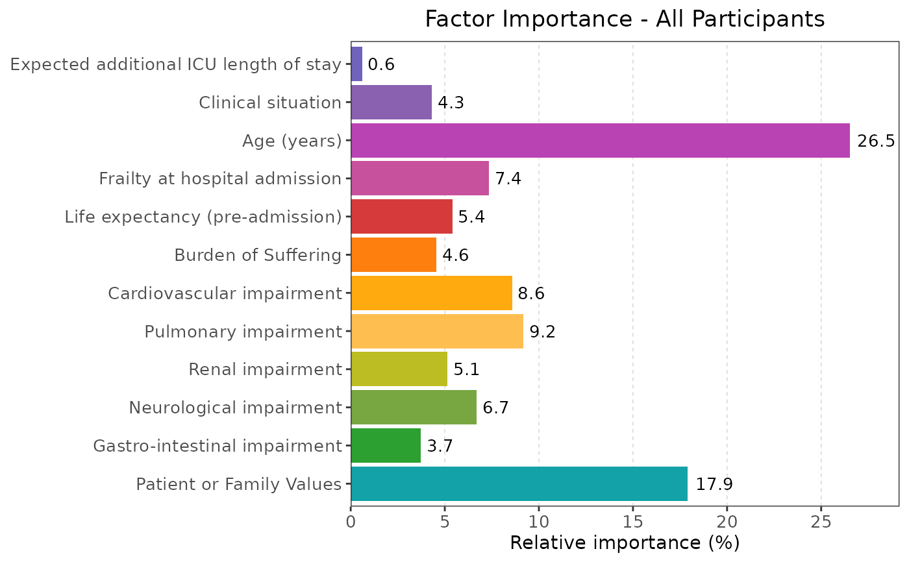
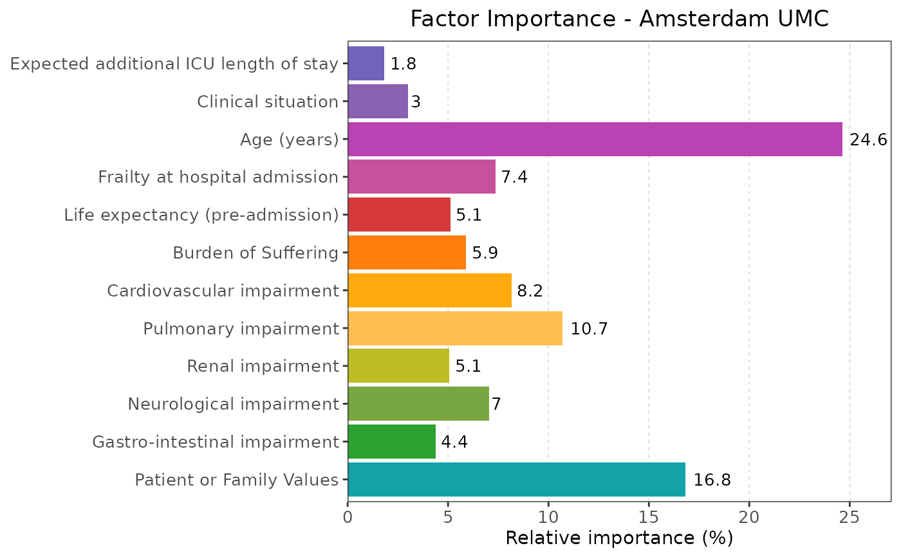
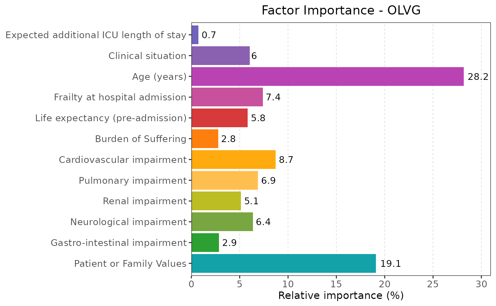
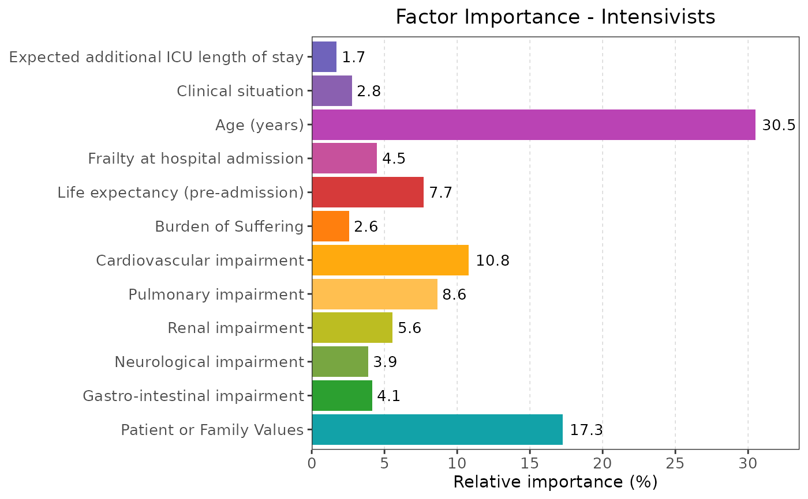
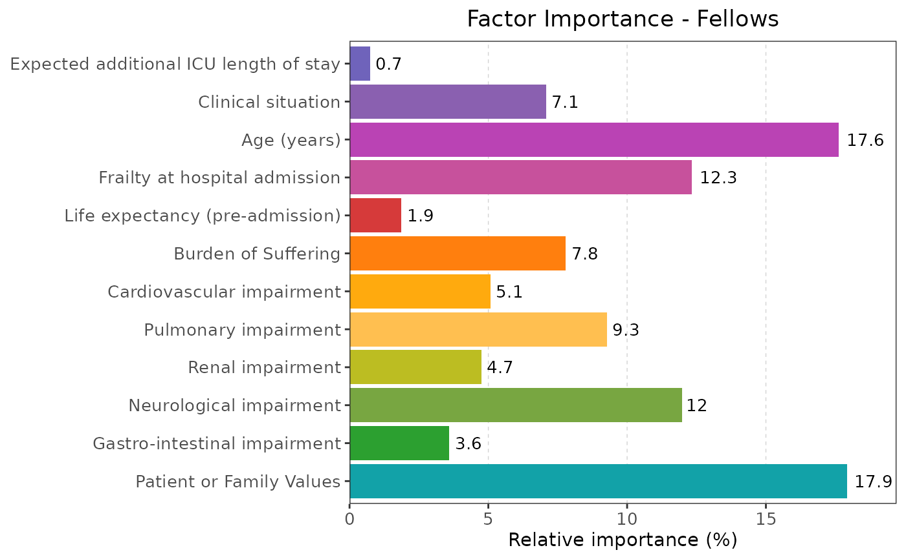
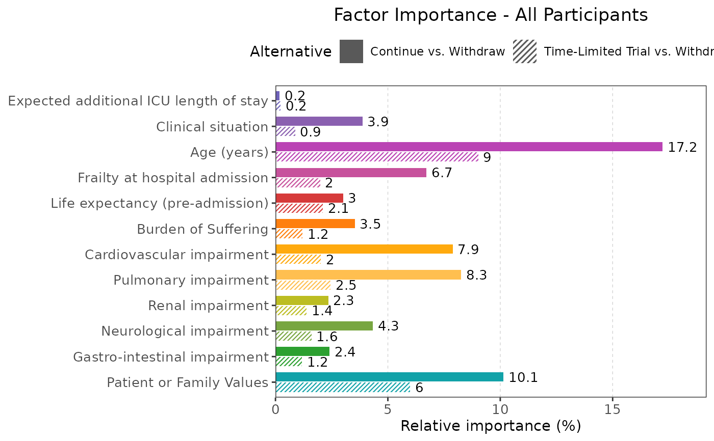
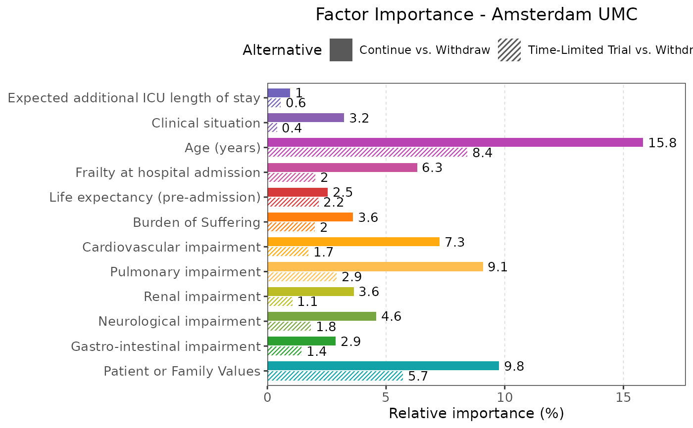
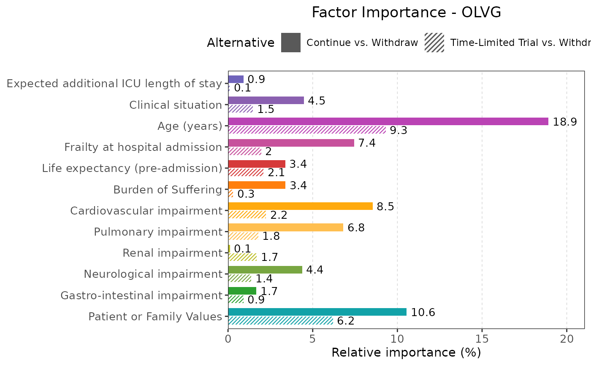
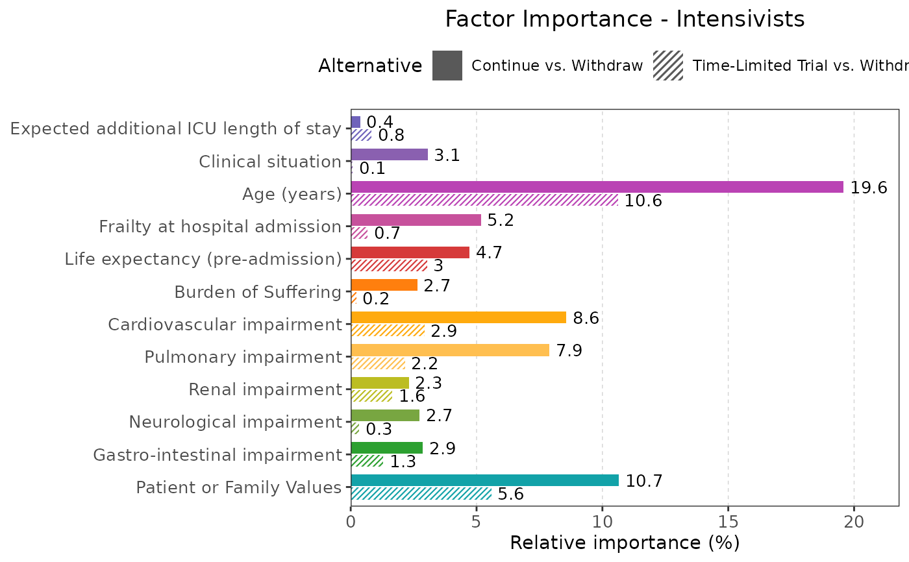
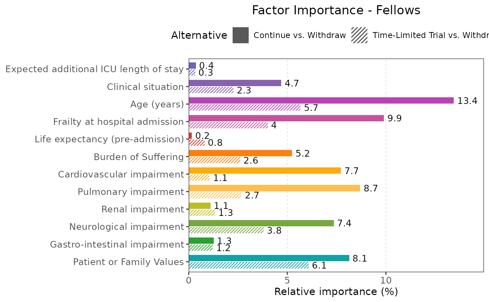

Plot Relative Importance
plot_relative_importance.RdCreates plots showing the relative factor importance using Maximum Utility Contribution for the aggregate
model for both the binary and multinomial models of all participants and subgroups.
Saves the plot as png and svg in the extdata\figures folder.
Examples
baitlist::plot_relative_importance()
#> Creating relative importance plots...
#> Processing All Participants model (binary)...
#> Processing Amsterdam UMC model (binary)...
#> Processing OLVG model (binary)...
#> Processing Intensivists model (binary)...
#> Processing Fellows model (binary)...
#> Processing All Participants model (multinomial)...
#> Processing Amsterdam UMC model (multinomial)...
#> Processing OLVG model (multinomial)...
#> Processing Intensivists model (multinomial)...
#> Processing Fellows model (multinomial)...
#> $binary
#> $binary$aggregate

#>
#> $binary$aumc

#>
#> $binary$olvg

#>
#> $binary$intensivists

#>
#> $binary$fellows

#>
#>
#> $multinomial
#> $multinomial$aggregate

#>
#> $multinomial$aumc

#>
#> $multinomial$olvg

#>
#> $multinomial$intensivists

#>
#> $multinomial$fellows

#>
#>